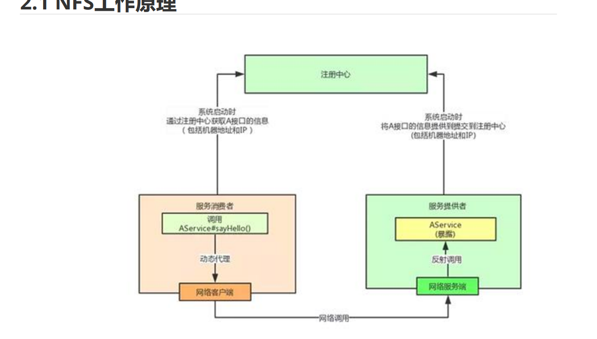
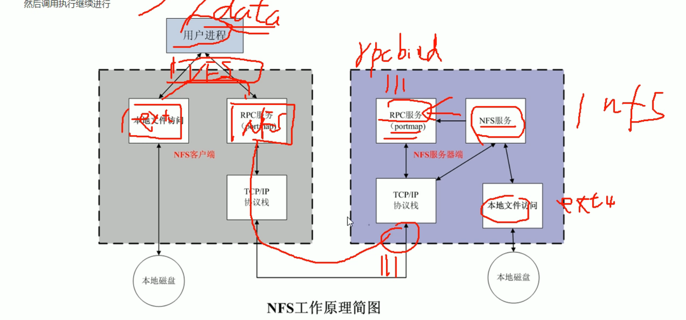
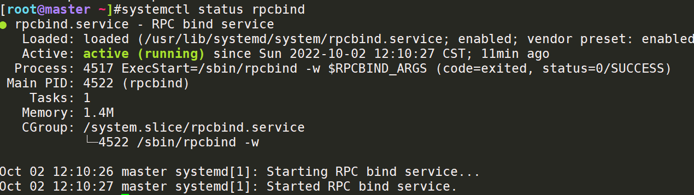
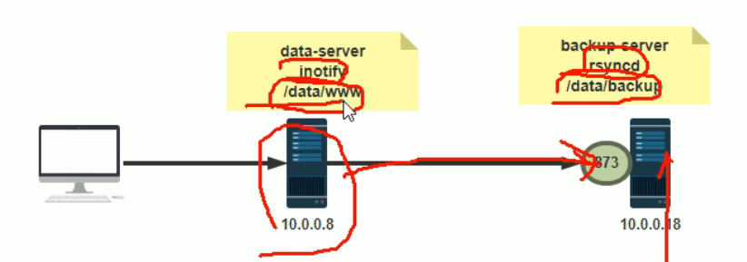
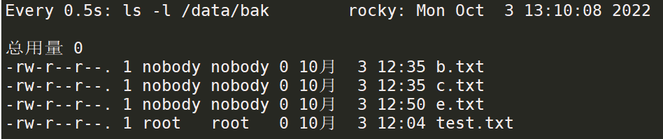
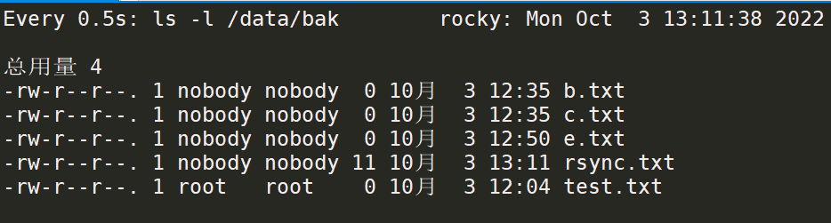
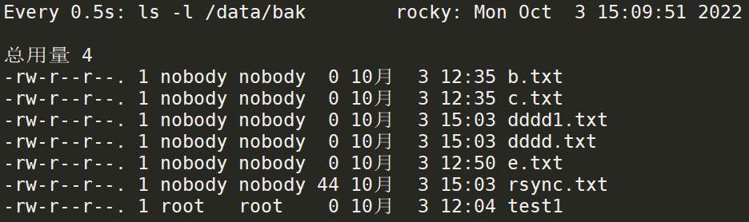
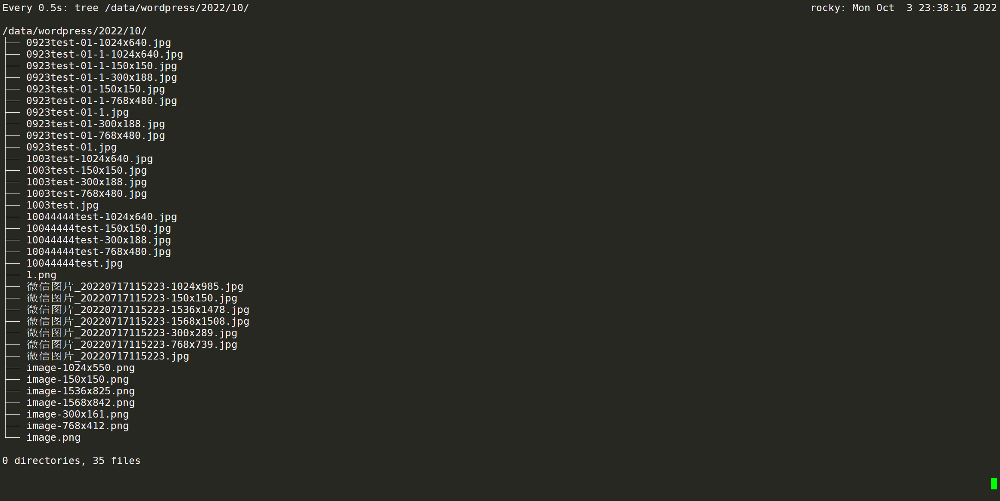

文件共享NAS+rync 日常使用：NAS比较多，公有云基本也是使用NAS，包括后续的PVC也有两种模式：云盘版本和NAS版本
NAS：直接进行挂载，要安装软件，NFS协议，可以共享挂载，存在一定的性能瓶颈
文件系统分类：EXT4，XFS，NFS（网络共享）
VFS：屏蔽了底层文件系统的差异，给到操作系统指令去读，操作系统可以直接读到NAS内的内容，服务叫NAS，文件系统协议叫NFS
类似MySQL的锁机制，NAS的文件共享也会被多个人访问，需要确保每个人的修改不要产生冲突，可以将用户上传的图片直接放到NAS上
注册中心 NAS的服务起来后，会有端口号时常变化的情况，需要使用到注册中心；一旦NAS的服务启动了，就不会变了，包括NAS服务器的IP；用户想要访问NAS，就去到注册中心获取IP+端口，就可以访问了
类似nacos注册中心，也是可以将微服务注册到nacos，用户/k8s/服务器等访问服务的时候，直接访问到nacos，访问微服务—>pod，一个微服务=一个pod/services，对外提供服务

基于RPC服务/协议来进行连接的(监听端口111)，RPMBIND服务
先连接注册中心—访问到NAS服务—通过RPC服务(TCP)协议，连接到RPC，从而访问NFS服务，不管是mount也好还是访问/修改文件也好

搭建NFS文件共享系统 1.安装相关软件包 必备软件包：nfs-utils，客户端+服务端，自带nfs-server和nfs-utils客户端
rpcbind：注册中心，监听111端口—>相关依赖
1 2 3 4 5 6 7 8 9 10 11 12 13 14 15 16 17 18 19 yum -y install rpcbind nfs-utils

NFS监听端口号特别多，都是基于一些程序，服务提供的
2.启动nfs-server服务，观察端口号，只读权限查看 showmount -e 10.0.0.129：看129的机器上有没有共享出来的目录
1 2 3 4 5 6 7 8 9 10 11 12 13 14 15 16 17 18 19 20 21 22 23 24 25 26 27 28 29 30 31 32 33 34 35 36 37 38 39 40 41 42 systemctl start nfs-serversync ,wdelay,hide,no_subtree_check,sec=sys,ro,secure,root_squash,no_all_squash)mkdir -p /data/nfsfor 10.0.0.129:df -Th | grep nfssync ,wdelay,hide,no_subtree_check,sec=sys,rw,secure,root_squash,no_all_squash)
3.修改权限，映射账号，实现读写 对于NFS的服务来讲：先在NFS服务器授权共享目录
1.远程NFS客户端访问的用户，是根据UID来判断在nfs目录上写的用户/用户组的；比如root—>nobody，但是普通用户就是普通用户，写上远端服务器的UID+GID
2.修改共享目录的权限
1 2 3 4 5 6 7 8 9 10 11 12 13 14 15 16 17 18 19 20 21 22 23 24 25 26 27 28 29 30 31 32 33 34 35 36 37 38 39 40 41 42 43 44 45 46 47 48 [root@slave1 nfs-share1]chmod 647 /data/nfs-share1sync ,wdelay,hide,no_subtree_check,sec=sys,rw,secure,root_squash,no_all_squash)groups =65534(nfsnobody)groups =65534(nfsnobody)echo ikun >> ikun.txtid ikungroups =1006(ikun)
4.修改所有写入的账号映射成同一个账号nfsnobody，包括root 区分是那个账号写入的，也可以使用，统一映射成nfsnobody这个账号，统一UID和GID
可以实现给多个WEB主机写图片，映射到他们的web目录下，比如说/apps/nginx/data/pic下，这样用户写图片的时候就写到nfs的空间，而不是写到web服务器的磁盘上，节省空间，高效云盘即可
1 2 3 4 5 6 7 8 9 10 11 12 13 14 15 16 17 18 19 20 21 vim /etc/exportssync ,wdelay,hide,no_subtree_check,sec=sys,rw,secure,root_squash,all_squash)groups =65534(nfsnobody)
针对特定的主机给特定的权限，不要所有人都可以读写，指定给132权限
也可以给多个目录挂载规则
1 2 3 4 5 6 7 8 9 10 11 /data/nfs-share1 *(rw,all_squash) 10.0.0.132(ro)sync ,wdelay,hide,no_subtree_check,sec=sys,ro,secure,root_squash,no_all_squash)sync ,wdelay,hide,no_subtree_check,sec=sys,rw,secure,root_squash,all_squash)touch : 无法创建 '111' : 只读文件系统
5.实现nas设备永久挂载(客户端)/etc/fstab 记得是nfs，写fstab文件的时候
一般内网都是通的
1 2 3 4 5 6 7 vim /etc/fstab
6.针对不同的项目写不同的exports规则/etc/exports.d/nginx.exports 假设128是nginx机器
1 2 3 4 5 6 7 8 9 10 11 12 13 14 15 16 17 18 19 20 vim /etc/exports.d/nginx.exportssync ,wdelay,hide,no_subtree_check,sec=sys,ro,secure,root_squash,no_all_squash)sync ,wdelay,hide,no_subtree_check,sec=sys,rw,secure,root_squash,no_all_squash)sync ,wdelay,hide,no_subtree_check,sec=sys,rw,secure,root_squash,all_squash)chmod 777 /data/nfs-share2/
基于内核实现数据的实时同步inotify 实现方式：inotify+rsync来实现
查看内核文件，在/boot下面
1 2 3 4 5 6 7 8 9 10 11 12 13 14 15 16 17 18 19 20 21 [root@master boot]
1 2 3 4 5 6 7 8 9 10 11 12 13 14 15 16 17 18 19 20 21 22 23 24 25 26 27 28 yum -y install inotify-toolstouch nfs"%Y-%m-%d %H:%M:%S" --format "%T %w%f event: %e" "%F %H:%M:%S" --format "%T %w%f event:%;e" -ecreate,delete,moved_to,close_write,attrib
普通监控和自定义参数监控的区别：不需要额外去关注文件的操作 1 2 3 4 5 6 7 8 9 10 11 12 13 14 15 16 17 18 编辑文件"%T %w%f event:%;e" '%T %w %f' ".*\.swp" --timefmt '%Y-%m-%d %H:%M:%S' --format '%T %w %f' -e create,delete,moved_to,close_write,attrib
实现inotify+rsync脚本同步备份数据 实现rync实现增量复制
rsync和rsync的协议
rsync：实现源目录到目标目录的增量复制，但是需要提前准备好检测目录文件变化的脚本检测方式
逻辑：一检测到nas服务器的/data/nfs-share1和2有变化，通过rsync同步过去
环境：
10.0.0.129 NAS服务器，共享目录
10.0.0.132 NAS备份服务器
rsync常用参数 1 2 3 4 5 6 7 8 9 10 -a:--archive 归档模式，表示以递归方式传输文件，并保持所有文件属性
1.在备份机器上安装rsync服务，监听873端口 1 2 3 4 5 6 7 8 9 10 11 12 13 14 15 16 17 18 19 20 21 22 23 24 25 26 27 28 29 yum -y install rsync-daemonenable --now rsyncdread only=no chmod 777 /data/bak
2.从数据机器进行备份 Cent OS7上面是nobody，Cent OS8上面是nfsnobody
这里走的是rsync协议
1 2 3 4 5 6 7 8 9 10 11 12 13 14
3.实现经过认证授权才可以同步文件，需要用到固定账号 注释和文本不要写在一行！！！ 基于账号验证，需要写到固定文件里，也可以expect交互式，最好是不要写到脚本里
1 2 3 4 5 6 7 8 9 10 11 12 13 14 15 16 17 18 19 20 21 22 23 24 25 26 27 28 29 30 31 32 33 34 35 36 37 38 39 log file = /var/log/rsyncd.logread only = nousers = rsyncuser echo "rsyncuser:123" > /etc/rsync.paschmod 600 /etc/rsync.pas echo "123" > /etc/rsync.paschmod 600 /etc/rsync.pas
查看、上传和下载
1 2 3 4 5 6 7 8 9 10 11 12 13 14 15 16 17 18 19 20 21 22 23
nas+inotify+rsync+shell实现实时同步文件 环境：
10.0.0.132 备份服务器：搭建rsync同步服务端
10.0.0.129 数据服务器：inotify实现监控挂载到本地的NAS目录文件变化，通过rsync实时同步到服务端，搭建NAS服务给到master服务nginx使用，存放nginx web端的文件(通过映射nobody)

1.基础环境 1 2 3 4 5 6 7 8 9 10 11 12 13 14 15 16 17 18 1.客户端cat /etc/fstab | grep nfs
2.编写脚本实现实时同步 逻辑：检查到源端有变化，则更新到目的端，10.0.0.132::bak
1 2 3 4 5 6 7 8 9 10 11 12 13 14 15 16 17 18 19 20 21 22 23 24 25 vim inotify_rsync.sh'/data/nfs-share1/' 'rsyncuser@10.0.0.132::bak' echo "starting monitor file change..." sleep 2".*\.swp" --timefmt '%Y-%m-%d %H:%M:%S' --format '%T %w %f' -e create,delete,moved_to,close_write,attrib ${SRC} |while read DATE TIME DIR FILE;do ${DIR} ${FILE} $SRC $DEST echo "At ${TIME} on ${DATE} , file $FILEPATH was backuped up via rsync" >> /var/log/changelist.logdone ${DIR} ${FILE} --->/data/nfs-share1/e.txt
执行脚本，同时监控132的/data/bak
1 2 3 4 5 6 7 8 9 10 11 12 13 14 15 16 17 18 19 20 21 nohup ./inotify_rsync.shls -l /data/bakecho "rsync test" >> rsync.txttail -f /var/log/changelist.logtail -f /var/log/rsyncd.log

基于sersync进行自动化同步 使用sersync同步：省去了inotify监控很多不必要监控的事件，也是调用内核的inotify指令，inotify会重复调用rsync命令，造成资源的浪费
1.环境准备 1 2 3 4 5 6 7 8 9 10 11 12 13 14 15 16 17 18 19 20 21 22 23 24 25 26 27 28 29 30 31 32 33 34 35 36 37 38 39 ls /apps/sersyncset the system paramecho 50000000 > /proc/sys/fs/inotify/max_user_watchesecho 327679 > /proc/sys/fs/inotify/max_queued_eventscommand paramls -l /data/bak

2.config.xml的写法 注释的为修改部分
1 2 3 4 5 6 7 8 9 10 11 12 13 14 15 16 17 18 19 20 21 22 23 24 25 26 27 28 29 30 31 32 33 34 35 36 37 38 39 40 41 42 43 44 45 46 47 48 49 50 51 52 53 54 55 56 57 58 59 60 61 62 63 64 65 66 <?xml version="1.0" encoding="ISO-8859-1" ?> <head version ="2.5" > <host hostip ="localhost" port ="8008" > </host > <debug start ="false" /> <fileSystem xfs ="false" /> <filter start ="false" > <exclude expression ="(.*)\.svn" > </exclude > <exclude expression ="(.*)\.gz" > </exclude > <exclude expression ="^info/*" > </exclude > <exclude expression ="^static/*" > </exclude > </filter > <inotify > <delete start ="true" /> <createFolder start ="true" /> <createFile start ="false" /> <closeWrite start ="true" /> <moveFrom start ="true" /> <moveTo start ="true" /> <attrib start ="true" /> <modify start ="false" /> </inotify > <sersync > <localpath watch ="/data/nfs-share1" > <remote ip ="10.0.0.132" name ="bak" /> </localpath > <rsync > <commonParams params ="-artuz" /> <auth start ="true" users ="rsyncuser" passwordfile ="/etc/rsync.pas" /> <userDefinedPort start ="false" port ="874" /> <timeout start ="false" time ="100" /> <ssh start ="false" /> </rsync > <failLog path ="/tmp/rsync_fail_log.sh" timeToExecute ="60" /> <crontab start ="false" schedule ="600" > <crontabfilter start ="false" > <exclude expression ="*.php" > </exclude > <exclude expression ="info/*" > </exclude > </crontabfilter > </crontab > <plugin start ="false" name ="command" /> </sersync > <plugin name ="command" > <param prefix ="/bin/sh" suffix ="" ignoreError ="true" /> <filter start ="false" > <include expression ="(.*)\.php" /> <include expression ="(.*)\.sh" /> </filter > </plugin > <plugin name ="socket" > <localpath watch ="/opt/tongbu" > <deshost ip ="192.168.138.20" port ="8009" /> </localpath > </plugin > <plugin name ="refreshCDN" > <localpath watch ="/data0/htdocs/cms.xoyo.com/site/" > <cdninfo domainname ="ccms.chinacache.com" port ="80" username ="xxxx" passwd ="xxxx" /> <sendurl base ="http://pic.xoyo.com/cms" /> <regexurl regex ="false" match ="cms.xoyo.com/site([/a-zA-Z0-9]*).xoyo.com/images" /> </localpath > </plugin > </head >
基于LNMP架构搭建LB+web+mysql+nas架构，实现从web站点上传的图片自动同步 环境：
10.0.0.128 apache+wordpress服务，数据库主库指向10.0.0.132，基于docker来安装，映射出来，docker安装wordpress
10.0.0.132 MySQL(主)，备份服务器
10.0.0.129 MySQL(从)，NAS服务器，NAS服务器指向
1.docker搭建wordpress+MySQL docker run的时候，需要-v映射到nfs的共享目录，单个docker的映射目录()
还是直接docker run得了
1 2 3 4 5 6 7 8 9 10 11 12 13 14 15 16 17 18 19 20 21 22 23 24 25 26 27 28 29 30 31 32 33 34 docker pull wordpress'{print $1}' `rm -f `docker ps -a | grep wordpress | awk '{print $1}' `"WorkingDir" : "/var/www/html" ,"docker-entrypoint.s…" 4 seconds ago Up 3 seconds 0.0.0.0:8002->80/tcp, :::8002->80/tcp wordpress'%' ;
2.rsync直接同步uploads目录到备份机[wp] docker搭建映射出来的路径，不能再进行一次挂载，所以说API服务器有两个，IP+相同的端口号，uploads的rsync直接指向到10.0.0.132的复制目录，/data/bak
[root@master uploads]#exportfs -r
如果是多个web前端的话，程序可以控制写到LB的IP，负载均衡两个WEB，两个WEB的图片备份都指向备份机器，且两台WEB之间同步图片
1 2 3 4 5 6 7 8 9 10 11 12 13 14 15 16 17 18 19 20 21 22 23 24 25 26 27 28 29 30 31 32 33 34 35 36 37 38 39 40 41 42 43 44 45 46 47 48 49 50 51 52 53 54 55 56 57 "/apps/wordpress/wp-content/uploads" > <!--/apps/wordpress/wp-content/uploads -->"10.0.0.132" name="wp" /> <!--修改远端rsync备份服务器和备份目录 -->"-artuz" />"true" users ="rsyncuser" passwordfile="/etc/rsync.pas" /> <!--鉴权用户名，调用本地的password文件 -->read only = nousers = rsyncusernohup ./sersync2 -dro confxml.xml

3.rsync使用脚本(在没有包的情况下，常用) 顺便安装了rsync和inotify，可以作为定时任务，或者nohup也行
缺点：调用多次rsync，有点小毛病，调用多次create，attribu等指令
1 2 3 4 5 6 7 8 9 10 11 12 13 14 15 16 17 18 19 20 21 22 23 24 25 26 27 28 29 30 31 vim inotify_rsync.shnohup ./inotify_rsync.sh'/apps/wordpress/wp-content/uploads/' 'rsyncuser@10.0.0.132::wp' echo 50000000 > /proc/sys/fs/inotify/max_user_watchesecho 327679 > /proc/sys/fs/inotify/max_queued_eventsecho "starting monitor file change..." sleep 2".*\.swp" --timefmt '%Y-%m-%d %H:%M:%S' --format '%T %w %f' -e create,delete,moved_to,close_write,attrib ${SRC} |while read DATE TIME DIR FILE;do ${DIR} ${FILE} $SRC $DEST echo "At ${TIME} on ${DATE} , file $FILEPATH was backuped up via rsync" >> /var/log/changelist.logdone
nohup 英文全称 no hang up（不挂起），用于在系统后台不挂断地运行命令，退出终端不会影响程序的运行。4.负载均衡架构 nginx：前端负载均衡
web01，web02：docker部署
备份服务器：web01和web02互相使用rsync脚本同步，同步前先完成一遍复制确保一致
web01和web02再备份一次到备份服务器
3方—4方—多方同步解决
目前只能实现docker单节点部署wordpress，通过脚本自动备份到远端132的机器
1.环境：可以在slave1上面搭建web02站点
1 2 3 4 5 6 7 8 9 10 11 12 13 14 15 16 17 18 19 20 21 22 23 24 25 26 27 28 29 30 31 32 33 34 搭建docker环境，搭建私有仓库's/enable/disabled/g' /etc/config/selinux's/gpgcheck=1/gpgcheck=0/g' /etc/yum.repos.d/docker-ce.repochown apache.apache /var/www/html/*
2.拷贝所有web01站点的信息过去，docker需要映射出来
1 2 3 4 5 6 7 8 9 10 11 12 13 14 15 16 17 18 19 20 21 22 23 24 25 26 27 28 29 30 31 32 33 34 35 36 37 38 39 40 41 42 43 44 45 46 47 48 49 50 51 52 53 54 55 56 57 58 59 60 61 62 63 64 1.配置docker基础环境"registry-mirrors" : ["https://plqjafsr.mirror.aliyuncs.com" "exec-opts" : ["native.cgroupdriver=systemd" "log-driver" : "json-file" ,"log-opts" : {"max-size" : "100m" "storage-driver" : "overlay2" ,"insecure-registries" : ["10.0.0.128:5000" ] ---配置本地仓库"repositories" :["wordpress" ]}"repositories" :["wordpress" ]}'{print $1}' `'{print $1}' `'{print $1}' `rm -f `docker ps -a | grep wordpress | awk '{print $1}' `
3.配置WEB01的DNS解析，添加A记录
4.前端添加一个nginx或者是LVS，实现前端负载均衡
1 2 3 4 5 6 7 8 9 10 11 12 13 14 15 16 17 18 sync ,wdelay,hide,no_subtree_check,sec=sys,rw,secure,root_squash,all_squash)for 10.0.0.128:"docker-entrypoint.s…" 4 days ago Up 2 seconds 0.0.0.0:8002->80/tcp, :::8002->80/tcp wordpress